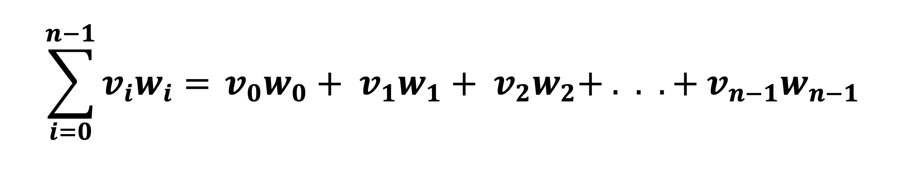

In this assignment you will solve 9 problems that assess your skills in writing programs that implement Functions and use Arrays in C.
Each program will be written in a different file, but all programs will be submitted together in one compressed file called handin.tar.
Read the following instructions completely before you
start writing code to understand what the problems are, where to solve
them, how to prepare your handin.tar submission file, and how to test it before submitting.
make to help you test your code and prepare your submissions.You only have to install make once, so you will not need to do it again in the next assignments.
To install make on Ubuntu, run the following command in the Ubuntu terminal and write your password when prompted to accept the installation:
sudo apt install make
Note for Mac users: If you are using Mac, you probably have make installed already. If not, you need to install the Mac Command Line Tools.
Inside the extracted directory, you will find multiple C files, 3 files called checker.sh, runguard.c, and Makefile, and a directory called tests. You will need to modify some of these files, while some others should not be modified at all.
Some problems will have one file, while others will have multiple files. The file or files of each problem will be used to solve only that problem.
When you submit your assignment, all the problem files will be submitted, even if they are empty. Do not worry, you will only receive grades for the files that you implement, any unimplemented file will get 0 points until it is implemented and graded again. Do NOT delete any of the problem files or change their names. If you do that, they will not be graded.
To understand what you need to do in each problem, continue reading. Each problem is explained in the Problems section below.
tests directory and anything inside it:This directory contains a number of sample tests that
will be used to test your code before you submit it. Each problem has
its own directory inside tests, and inside each problem's directory there are two directories: inputs and outputs. The inputs directory contains the inputs of the test cases, and the outputs
directory contains the expected outputs for the inputs. Do not move,
remove, or modify these files. If you do that, you will not be able to
test your solutions on your machine.
checker.sh and runguard.c:These two files will help you grade most of your work on your laptop without having to submit it to Autolab. You will not use these file by yourself, but you will be using a command that uses them, so do not worry about them. You do not need to open them or understand how they work.
Makefile:This file contains a few commands (called "make
commands") that will make your life A LOT EASIER if you are using Ubuntu
or Mac. If you followed the instructions in the Getting Started section
above and installed make, you will be able to use a few commands to prepare your submission and test your code before you submit it to Autolab.
To run any command, you just have to open the Ubuntu terminal (or the Mac terminal if you are on Mac) then cd into the assignment3-handout directory and type one of the following commands:
make prepare-handin: Takes all the problem files in the directory and compresses them together into one file called handin.tar. This will be the file you will submit to Autolab.make test-handin: Takes the handin.tar file that you generated from the make prepare-handin
command, and extracts it into a new directory called
assignment3-testgrade and and tests your solutions in it. It will
display the result of grading in the terminal at the end. Here is an
example of how it might look like:Cleaning up..
Compiling Problem 1..
Running your solution for Problem 1..
Running test case 1..
Compiling Problem 2..
Running your solution for Problem 2..
Running test case 1..
Running test case 2..
.
.
===========================================================
========================= Results =========================
===========================================================
Problem 1
[Success] Produces correct output on all cases.
===========================================================
Problem 2
[Failure] Produces incorrect output on case 2 with Input:
15 31.5
Your output:
46
The expected output:
46.50
===========================================================
.
.
Remember to always run make prepare-handin to create a new handin.tar file before running make test-handin to test your code.
make clean: Deletes any extra files
or directories that were created in the handout directory by the other
commands (specifically, it deletes the handin.tar file and the
assignment3-testgrade directory).When you submit your code to Autolab, we test it using a combination of tests. First we apply the tests that were available to you by running the testing make command, and second by running another group of tests that are not available to you. This means that your code might get a full grade on your laptop but might get a lower grade on Autolab because it fails a few other tests. Only your grade on Autolab will be counted.
To submit your work to Autolab:
handin.tar file that contains your solutions as described in the section above.handin.tar to Autolab in the assignment page.Important note: You can only make 16 total submissions for this assignment. Only your last submission will be counted toward your grade. The website displays the number of remaining submissions you have under the assignment submission page.
Before submitting your work to Autolab, make sure that you test your code by running the testing make command, and by yourself (compile it with gcc and try it yourself) if you want to try other cases. You can test your work on your laptop as many times as you want before you submit it to Autolab. But you can only submit it 16 times to Autolab for this assignment.
Solve this problem inside the file problem1.c. Do not modify any other files for this problem.
In this problem you will write a program that sorts (orders) a group of integers descendingly (from larger to smaller) then displays the integers in order in addition to the number of pairs of integers that were swapped while ordering.
The following pseudo-code describes the algorithm you will use, if you follow it and implement it correctly, you should be able to solve this problem.
- store the number of integers in a variable $count$
- define an array of size $count$
- store the integers in the array
- define a variable to store the number of swaps and initialize it to 0
- define a variable $i$ and set its value to the first index of the array
- repeat the following as long as $i$ is less than the size of the array:
- find the maximum element between the elements that start at index $i$ and end at the last index in the array
- if the index of the maximum element is not equal to $i$:
- swap the maximum element with the element at index $i$
- increment the number of swaps (add 1 to it)
- increment $i$
- print the number of swaps as in the examples below
- print the integers of the array on a new line, separate each two integers by a space
| Input | Output |
|---|---|
| 5 1 4 3 2 5 |
1 swap 5 4 3 2 1 |
| 5 6 7 8 9 10 |
2 swaps 10 9 8 7 6 |
| 5 20 60 50 40 30 |
4 swaps 60 50 40 30 20 |
In the first example, following the algorithm, 1 is swapped with 5. No other swaps happen.
In the second example, following the algorithm, 10 is swapped with 6, the array becomes 10 7 8 9 6. Then 7 is swapped with 9, the array becomes 10 9 8 7 6. No other swaps happen.
In the third example, following the algorithm, 20 is swapped with 60, the array becomes 60 20 50 40 30. Then 20 is swapped with 50, the array becomes 60 50 20 40 30. Then 20 is swapped with 40, the array becomes 60 50 40 20 30. Then 20 is swapped with 30, the array becomes 60 50 40 30 20. No other swaps happen.
Solve this problem inside the file problem2.c. Do not modify any other files for this problem.
In this problem, you will learn a smart way to deal with data in programs. You will create what is called a Frequency Array to quickly find the number of times an integer appears in an array.
Before we learn how to do that, think if you had an array of n
integers and you were asked to find the number of times the number 6
appears in it, you can simply create a loop that counts the number of
times an element is equal to 6. For example, assuming we have an array elements that has 10 integers:
int count = 0;
for (int i = 1; i < 10; ++i) {
if (elements[i] == 6)
++count;
}
printf("The number 6 appears %d times in the array.\n", count);
Now if you were asked to repeat the same thing but for a different number, you will have to create another loop, or you can ask the user how many numbers they wish to check then put the previous loop inside another loop and ask the user for a number to check each time:
printf("How many numbers do you want to check?\n");
int numbers;
scanf("%d", &numbers);
for (int i = 0; i < numbers; ++i) {
printf("Please enter a number:\n");
int number;
scanf("%d", &number);
int count = 0;
for (int j = 0; j < 10; ++j) {
if (elements[j] == number)
++count;
}
printf("The number %d appears %d times in the array.\n", number, count);
}
The method above works, but it is slow because each time we will need to go over the whole array to count the number of occurences of the number. A better method to do this is using what is called a Frequency Array.
A frequency array is an array that stores the number of times an element appears in another array under an index equal to that number. The following steps and examples will help you understand and build a frequency array:
Now it is your turn:
n that corresponds to the number of integers in an array. Then accept n numbers that correspond to the array elements. The maximum element in the array will be equal to 1300.q that corresponds to the number of integers we need to check the frequency for. The input will then have q integers, print the frequency for each one of them on a new line.| Input | Output |
|---|---|
| 10 8 7 6 7 6 9 6 5 4 5 5 6 7 5 6 8 |
3 2 2 3 1 |
Explanation: The example above is the same one we have in the figures above. The number 6 appeared 3 times in the original array. The numbers 7 and 5 appeared twice. The number 6 again appeared 3 times, and finally 8 appeared once.
Solve this problem inside the file problem3.c. Do not modify any other files for this problem.
Your friend got a new job in a shoe factory. He works as a quality assurance officer and is responsible for confirming the quality and numbers of a special shoe called "Cshu". Each day, the factory produces pairs of shoes of different sizes, for example: a pair of size 33 and a pair of size 35. Each pair has 2 shoes (left and right).
Your friend noticed that the number of shoes that was produced one day was not even. He reviewed the machines that produce the shoes and discovered an issue in one of them that makes them produce 1 shoe instead of 2. Luckily this only happens one time each day, so only one shoe size will have 1 shoe, but all the other shoe sizes will have 2. He brought a list of the shoe sizes that were produced on that day and asked for your help in writing a program that can find the size of the shoe that appears only once in the list in case the issue happens again.
Your program must accept an integer n (n will always be odd) that represents the number of shoe sizes in the list. Your program will then accept n
integers, each integer represents a shoe size. Each integer will appear
exactly twice, except for one integer that will appear once. You need
to find it.
| Input | Output |
|---|---|
| 5 33 35 35 36 33 |
36 |
| 9 40 39 12 12 31 39 40 24 24 |
31 |
Explanation: In the first example, all the shoe sizes appear in the list two times except 36. In the second example, all the shoe sizes appear in the list two times except 31.
Solve this problem inside the files problem4-library.h and problem4-library.c. Do not modify any other files for this problem.
In geometry (علم الهندسة الرياضية), a line on the 2D Cartesian system (مستوى الديكارتي ثنائي الأبعاد) can be represented using two values that describe its length and direction, and it is called a Vector.
The following figure shows two vectors, the first vector is v = [2, 1], and the second vector is w = [1, 1].
The first number in the vector description describes how far on the
x-axis it goes, and the second number describes how far it goes on the
y-axis.
If the system was in 3D, the vector will have a third number that describes how far it goes on the z-axis, for example u = [3, 2, 4]. This idea can be generalized to any number of dimensions.
The angle between the 2 vectors is needed in many applications such as in physics, aviation, machine learning, and many many more. Your task in this problem is to find the angle between two vectors that have n-dimensions, using the following steps:
v will have n elements [v0, v1, v2, ..., vn - 1], and vector w will have n elements [w0, w1, w2, ..., wn - 1].
You need to write the 4 following functions inside problem4-library.c, then add their prototypes to problem4-library.h:
Hint: Look at the main function in problem4.c
but do not modify it. It will help you understand the types each
function accepts and returns. The main function prints some things on
the screen, do not print them again in your functions.
| Input | Output |
|---|---|
| 2 2 1 1 1 |
Vector V has the values: 2.00 1.00 Vector W has the values: 1.00 1.00 The dot product is: 3.00 The magnitude of V is: 2.24 The magnitude of W is: 1.41 The cosine of Theta is: 0.9486832981 Theta in radians is: 0.32 Theta in degrees is: 18.43 |
| 3 1 2 3 3 5 2 |
Vector V has the values: 1.00 2.00 3.00 Vector W has the values: 3.00 5.00 2.00 The dot product is: 19.00 The magnitude of V is: 3.74 The magnitude of W is: 6.16 The cosine of Theta is: 0.8237544710 Theta in radians is: 0.60 Theta in degrees is: 34.54 |
| 5 -2 1 2 -1 0 5 0 -1 1 1 |
Vector V has the values: -2.00 1.00 2.00 -1.00 0.00 Vector W has the values: 5.00 0.00 -1.00 1.00 1.00 The dot product is: -13.00 The magnitude of V is: 3.16 The magnitude of W is: 5.29 The cosine of Theta is: -0.7768985961 Theta in radians is: 2.46 Theta in degrees is: 140.98 |
Solve this problem inside the file problem5.c. Do not modify any other files for this problem.
You are given a 2D array that has n rows and m columns, transform the 2D array to have r rows and c columns then print it.
The input starts with n, and m. Then follows n lines, each line has m integers that represent the 2D array. The last line contains two integer r and c.
| Input | Output |
|---|---|
| 1 4 9 4 7 1 2 2 |
9 4 7 1 |
| 3 3 2 3 2 3 9 1 4 5 0 2 3 |
2 3 2 3 9 1 |
| 3 3 2 3 2 3 9 1 4 5 0 3 4 |
2 3 2 3 9 1 4 5 0 1 1 1 |
Solve this problem inside the files problem6-library.h and problem6-library.c. Do not modify any other files for this problem.
You are given two arrays. The first array has size n and the second array has size m.
You are required to find and print the elements that appear in both arrays using the frequency array method you learned in Problem 2. A solution that does not use the frequency array method will be too slow when the arrays are too large and will not be considered correct.
Write two functions:
Notes:
problem6.c, it prints some things on the screen. Do not modify them or print them again in your function.findFreq function. Modify it to make it work inside the function.findIntersection function. The function must call the findFreq function where appropriate.findIntersection function, print the elements that appear in both arrays on one line separated by spaces.| Input | Output |
|---|---|
| 5 33 34 35 36 37 4 1 2 33 3 |
The frequencies of the elements of array 1 are: 33 => 1 time, 34 => 1 time, 35 => 1 time, 36 => 1 time, 37 => 1 time The elements that appear in both arrays are: 33 |
| 4 9 7 48 13 4 12 7 9 48 |
The frequencies of the elements of array 1 are: 9 => 1 time, 7 => 1 time, 48 => 1 time, 13 => 1 time The elements that appear in both arrays are: 7 9 48 |
| 3 1 2 3 6 7 8 9 12 20 6 |
The frequencies of the elements of array 1 are: 1 => 1 time, 2 => 1 time, 3 => 1 time The elements that appear in both arrays are: |
| 3 2 2 3 4 2 2 2 4 |
The frequencies of the elements of array 1 are: 2 => 2 times, 2 => 2 times, 3 => 1 time The elements that appear in both arrays are: 2 |
Solve this problem inside the file problem7-library.c. Do not modify any other files for this problem.
In this problem, you need to fix the function replace inside problem7-library.c. All the other provided code for this problem is correct.
Start by opening problem7-library.h and reading the function's description, then go to problem7.c to see how the function is used inside the main function.
When you have a good idea about how the function should work, go to problem7-library.c and update the function to fix any issues in it. The function's parameters are all correct and should not be changed.
Write a comment inside the code explaining what the issues were.
Note: This problem can only be tested by submitting your handin to Autolab. Therefore make sure you test it by yourself and try many cases before you submit it.
Solve this problem inside the file problem8-library.c. Do not modify any other files for this problem.
A polynomial is a simple equation that when given the x value of a point, gives a y value for that point.
For example: y = x2 + 2x + 1
is a polynomial. If we want to find the y value of a point that has the
value x = 2, we plug it into the polynomial and find that y = 4 + 4 + 1 =
9, so the point will be (2, 9).
If you do not know the polynomial equation but have a group of points (x, y) generated from that polynomial, you can use them to approximate a new point by finding the y value for any new x. You will write 3 functions to do that as follows:
problem8-library.h and look at the 3 function prototypes we defined for you: findTerm, findAllPointTerms, and findY.problem8-library.c.problem8-library.c.problem8-library.c.problem8.c is
already written for you. It will ask the user to enter the x and y
values for a group of points, then use your functions to approximate the
value of y for a number of new points. You can read it if you want to
understand the input.The functions you will write implement the following equations to approximate the value. It is okay if you do not understand them, you do not have to understand them to solve this problem. We have explained everything you need to do in problem8-library.h before each function. The equations below are just provided for more context.
| Input | Output |
|---|---|
|
4 0 1 1 4 3 16 4 25 1 2 |
The value of findTerm for new point 2.0000 using points 0 and 1 is: -1.0000 The value of findTerm for new point 2.0000 using points 0 and 2 is: 0.3333 The value of findAllPointTerms for new point 2.0000 using point 0 is: -0.1667 The value of findAllPointTerms for new point 2.0000 using point 1 is: 2.6667 The value of findY for new point 2.0000 using all points is: 9.00000000 |
|
5 -1 3 0 -6 3 39 6 822 7 1611 2 2 5 |
The value of findTerm for new point 2.0000 using points 0 and 1 is: -2.0000 The value of findTerm for new point 2.0000 using points 0 and 2 is: 0.2500 The value of findAllPointTerms for new point 2.0000 using point 0 is: -0.5357 The value of findAllPointTerms for new point 2.0000 using point 1 is: -2.8571 The value of findY for new point 2.0000 using all points is: 6.00000000 The value of findTerm for new point 5.0000 using points 0 and 1 is: -5.0000 The value of findTerm for new point 5.0000 using points 0 and 2 is: -0.5000 The value of findAllPointTerms for new point 5.0000 using point 0 is: 0.2679 The value of findAllPointTerms for new point 5.0000 using point 1 is: 1.1429 The value of findY for new point 5.0000 using all points is: 369.00000000 |
In the first example, we have 4 known points, and we use them to approximate the value of one new point with x = 2.
The points in the first example are actually generated from the same polynomial we mentioned above y = x2 + 2x + 1. Notice how the code correctly approximated the value of y for x = 2 to be 9.
In the second example we have 5 points, and we use them to approximate the values of 2 new points with x = 2 and x = 5.
Solve this problem inside the file problem9.c. Do not modify any other files for this problem.
You are given a 2D array that has n rows and m columns, find the sum of its elements using the following instructions:
The input starts with n, and m. Then follows n lines, each line has m integers that represent the 2D array.
| Input | Output |
|---|---|
| 3 3 8 3 9 0 1 2 3 8 4 |
803192 |
| 2 2 2 7 3 4 |
27 |
| 3 4 0 2 3 1 23 83 12 0 7 4 4 1 |
24034210 |
In the second example, following the instructions: After we add the first 2 to the sum, we multiply by 10 to get 20, then we add 3 to get 23. We finished a column so we divide by 10 to get 2. Then we start with the new column, we multiply by 10 to get 20, we add 7 to get 27, we multiply by 10 to get 270, we add 4 to get 274, we finally divide by 10 because we finished a column so we get 27.